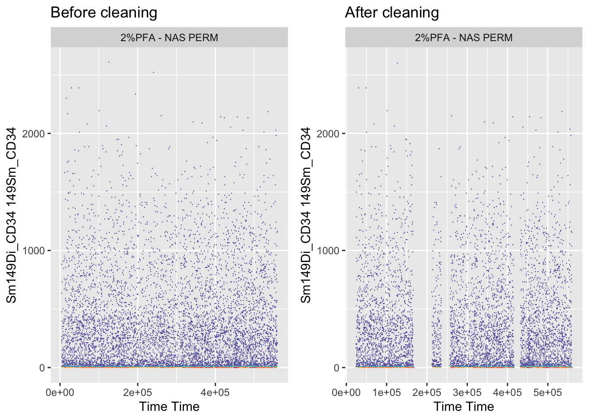
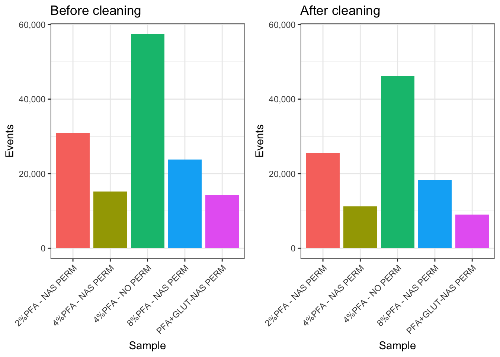

Chapter 9 Chapter 9 - Removing Acquisition Anomalies
9.1 What You’ll Learn
Cytometry acquisition isn’t always stable, clogs, voltage drift, or air bubbles can corrupt segments of a file partway through a run. Signal can also drift steadily across a long acquisition without any single dramatic event. PeacoQC detects both kinds of problem and removes the affected events. This chapter runs it across every file and saves the result as CLEANED_FLOWSET.rds.
flowCut is covered in the Deeper Dive as an alternative, along with a direct comparison of what the two tools do to the same data.
9.2 The Essentials
Stuck? This chapter starts from
Data/RDS/Reordered_RENAMED_FLOWSET.rds, made in Chapter 8. If the first chunk below errors, or Chapter 8’s checkpoint didn’t match, copy that file from the course data download over your own, then carry on from here.
9.2.2 Step 2: Load Your Data (if needed)
If Reordered_RENAMED_FLOWSET isn’t already in your Environment tab from Chapter 8, load it:
9.2.3 Step 3: Clean Each File
PeacoQC() works on one flowFrame at a time, not a whole flowSet, so we apply it across the flowSet with fsApply(), one file at a time.
Time and Event_length are excluded from the channels being checked. They aren’t markers, and asking a cleaning algorithm to look for anomalies in the time channel itself makes no sense:
channels_to_check <- colnames(Reordered_RENAMED_FLOWSET)[
!colnames(Reordered_RENAMED_FLOWSET) %in% c("Time", "Event_length")
]
CLEANED_FLOWSET <- fsApply(Reordered_RENAMED_FLOWSET, function(x) {
PeacoQC(
ff = x,
channels = channels_to_check,
plot = TRUE,
save_fcs = FALSE,
output_directory = here("Outputs", "PeacoQC")
)$FinalFF
})The FinalFF element of what PeacoQC() returns is the cleaned flowFrame. The function hands back a list containing diagnostics as well, and $FinalFF is the part we want.
9.2.4 Step 4: Save Your Work
Sample names are reassigned from the flowSet you started with before saving. This is cheap insurance, if the names ever fail to survive the fsApply(), every chapter after this one would be working with mislabelled samples and it wouldn’t be obvious:
sampleNames(CLEANED_FLOWSET) <- sampleNames(Reordered_RENAMED_FLOWSET)
pData(CLEANED_FLOWSET)$name <- sampleNames(CLEANED_FLOWSET)
saveRDS(CLEANED_FLOWSET, here("Data", "RDS", "CLEANED_FLOWSET.rds"))saveRDS() doesn’t print anything when it works, so check the file exists instead:
Success looks like this:
[1] TRUE9.2.5 Step 5: See What Was Actually Removed
Saving the file isn’t proof the cleaning did anything. Plot a channel against Time, before and after, and you can see what came out:
library(cowplot)
library(ggcyto)
#> Loading required package: ggplot2
#> Loading required package: ncdfFlow
#> Loading required package: BH
#> Loading required package: flowWorkspace
#> As part of improvements to flowWorkspace, some behavior of
#> GatingSet objects has changed. For details, please read the section
#> titled "The cytoframe and cytoset classes" in the package vignette:
#>
#> vignette("flowWorkspace-Introduction", "flowWorkspace")
Reordered_RENAMED_FLOWSET <- readRDS(here("Data", "RDS", "Reordered_RENAMED_FLOWSET.rds"))
CLEANED_FLOWSET <- readRDS(here("Data", "RDS", "CLEANED_FLOWSET.rds"))
# Pick any channel and any sample, adjust to whatever's relevant for your own data
BEFORE <- autoplot(Reordered_RENAMED_FLOWSET[[1]], "Time", "Sm149Di_CD34", bins = 256) +
ggtitle("Before cleaning")
AFTER <- autoplot(CLEANED_FLOWSET[[1]], "Time", "Sm149Di_CD34", bins = 256) +
ggtitle("After cleaning")
plot_grid(as.ggplot(BEFORE), as.ggplot(AFTER))
ggsave2(here("Figures", "PeacoQC_before_after.pdf"), width = 11, height = 8.5)
ggsave2(here("Figures", "PeacoQC_before_after.png"), width = 11, height = 8.5)PeacoQC also writes its own diagnostic plot for every file into Outputs/PeacoQC/, plus a summary table at Outputs/PeacoQC/PeacoQC_results/PeacoQC_report.txt. That report is worth opening: it breaks each file’s removals down by which check triggered them, which tells you why events were removed, not just how many.
A note on output volume: every tool in this chapter writes a diagnostic report for each file you run it on. With more than a handful of samples this adds up fast, expect Outputs/ to fill with one report per file per tool, not a single summary. Bear that in mind before you run this on a real dataset with dozens of files.
9.2.6 Step 6: Check Cell Counts Before and After
Cleaning can remove a meaningful chunk of a file. Compare the counts directly rather than looking at the cleaned numbers alone, a bar chart of what survived tells you nothing without the original beside it:
library(ggplot2)
BEFORE_COUNTS <- as.data.frame(fsApply(Reordered_RENAMED_FLOWSET, nrow))
colnames(BEFORE_COUNTS) <- "Events"
BEFORE_COUNTS <- tibble::rownames_to_column(BEFORE_COUNTS, "Sample")
AFTER_COUNTS <- as.data.frame(fsApply(CLEANED_FLOWSET, nrow))
colnames(AFTER_COUNTS) <- "Events"
AFTER_COUNTS <- tibble::rownames_to_column(AFTER_COUNTS, "Sample")
# Both panels must share a y axis, or ggplot scales each one to its own data
# and a large drop looks like a small one
Y_MAX <- max(BEFORE_COUNTS$Events)
p_before <- ggplot(BEFORE_COUNTS, aes(x = Sample, y = Events, fill = Sample)) +
geom_bar(stat = "identity") +
ggtitle("Before cleaning") +
scale_y_continuous(labels = scales::comma, limits = c(0, Y_MAX)) +
theme_bw() +
theme(legend.position = "none", axis.text.x = element_text(angle = 45, hjust = 1))
p_after <- ggplot(AFTER_COUNTS, aes(x = Sample, y = Events, fill = Sample)) +
geom_bar(stat = "identity") +
ggtitle("After cleaning") +
scale_y_continuous(labels = scales::comma, limits = c(0, Y_MAX)) +
theme_bw() +
theme(legend.position = "none", axis.text.x = element_text(angle = 45, hjust = 1))
plot_grid(p_before, p_after)
ggsave2(here("Figures", "cleaning_counts_before_after.pdf"), width = 11, height = 8.5)
ggsave2(here("Figures", "cleaning_counts_before_after.png"), width = 11, height = 8.5)Both panels are forced onto the same y axis with limits = c(0, Y_MAX). Without that, ggplot scales each panel to its own data, so the “after” panel stretches its bars back up to fill the space and a 25% loss looks like almost nothing. Any before-and-after bar chart needs this, and it’s an easy thing to miss because each panel looks perfectly reasonable on its own.
A sample that drops far more than the others is worth investigating in its PeacoQC diagnostic plot before continuing. It might mean rough acquisition, or it might mean that sample drifted more than the rest, which is a different problem with different consequences.
Check before you move on. This reads back the file the next chapter loads and prints a few facts about it. Your numbers should match the ones printed here. If they don’t, something earlier in this chapter went wrong: go back over it, or use the Stuck? note at the top of the next chapter.
CHECK <- readRDS(here::here("Data", "RDS", "CLEANED_FLOWSET.rds"))
length(CHECK) # Number of samples
#> [1] 5
fsApply(CHECK, nrow) # Cells in each sample
#> [,1]
#> 2%PFA - NAS PERM 25575
#> 4%PFA - NAS PERM 11250
#> 8%PFA - NAS PERM 18250
#> PFA+GLUT-NAS PERM 9000
#> 4%PFA - NO PERM 46250
ncol(CHECK[[1]]) # Number of channels
#> [1] 40
rm(CHECK)9.3 A Deeper Dive
Cleaning data happens in stages, and by this chapter three are done: gating to live singlets (already applied to the delivered dataset before Chapter 5), channel name cleanup with premessa (Chapter 8), and now acquisition anomaly removal.
9.3.1 Why PeacoQC Rather Than flowCut
flowCut and flowAI are the established tools, and this chapter used to be built around flowCut. A 2022 benchmark (Emmaneel et al., Cytometry Part A) tested PeacoQC against both across nine flow, three mass, and four spectral cytometry datasets. PeacoQC had the highest median balanced accuracy and scaled better to large files; flowAI tended to over-filter, removing more good data than necessary, and flowCut/flowClean sometimes missed anomalies the others caught.
The mechanism explains the results you’ll see below. PeacoQC, from the same lab that built FlowSOM, finds density peaks per channel over time and flags events that fall too far from them. It runs two checks: an isolation tree (IT) analysis for abrupt events, and a mean-absolute-deviation (MAD) distance check. The first catches clogs and bubbles. The second catches gradual drift, signal creeping up or down across a run with no single dramatic moment.
That second check is the one flowCut doesn’t act on.
9.3.2 flowCut, and What Happens When You Run Both
flowCut looks for abrupt changes over time in each channel, the signature of a clog, bubble, or voltage event, and flags the affected segment. It takes one flowFrame at a time, same as PeacoQC:
if(!require(flowCut)) BiocManager::install("flowCut")
library(flowCut)
CLEANED <- fsApply(
Reordered_RENAMED_FLOWSET,
function(x) flowCut(
x,
Directory = here("Outputs", "flowCut")
)
)CLEANED is a list, not a flowSet, flowCut() returns diagnostics alongside the cleaned data, so pull out just the frames and rebuild a flowSet from them:
files <- list()
for (x in 1:length(CLEANED)) {
files <- append(files, list(CLEANED[[x]]$frame))
}
CLEANED_FLOWCUT <- flowSet(files)
sampleNames(CLEANED_FLOWCUT) <- sampleNames(Reordered_RENAMED_FLOWSET)
pData(CLEANED_FLOWCUT)$name <- sampleNames(CLEANED_FLOWCUT)
saveRDS(CLEANED_FLOWCUT, here("Data", "RDS", "CLEANED_FLOWCUT.rds"))Note this saves to CLEANED_FLOWCUT.rds, not CLEANED_FLOWSET.rds. The rest of the course reads CLEANED_FLOWSET.rds, so running this section won’t overwrite what the Essentials produced.
Now compare the two directly, on the same files:
COMPARISON_COUNTS <- data.frame(
Sample = sampleNames(Reordered_RENAMED_FLOWSET),
Before = as.vector(fsApply(Reordered_RENAMED_FLOWSET, nrow)),
PeacoQC = as.vector(fsApply(CLEANED_FLOWSET, nrow)),
flowCut = as.vector(fsApply(CLEANED_FLOWCUT, nrow))
)
COMPARISON_COUNTS$PeacoQC_pct <- round(
100 * (COMPARISON_COUNTS$Before - COMPARISON_COUNTS$PeacoQC) / COMPARISON_COUNTS$Before, 2
)
COMPARISON_COUNTS$flowCut_pct <- round(
100 * (COMPARISON_COUNTS$Before - COMPARISON_COUNTS$flowCut) / COMPARISON_COUNTS$Before, 2
)
COMPARISON_COUNTS
#> Sample Before PeacoQC flowCut PeacoQC_pct
#> 1 2%PFA - NAS PERM 30825 25575 30825 17.03
#> 2 4%PFA - NAS PERM 15158 11250 11997 25.78
#> 3 8%PFA - NAS PERM 23790 18250 23172 23.29
#> 4 PFA+GLUT-NAS PERM 14171 9000 14171 36.49
#> 5 4%PFA - NO PERM 57521 46250 56000 19.59
#> flowCut_pct
#> 1 0.00
#> 2 20.85
#> 3 2.60
#> 4 0.00
#> 5 2.64On this course’s dataset, PeacoQC removes roughly 17% to 36% per file while flowCut removes nothing at all. Both are behaving correctly, and the reason is in PeacoQC’s own report: its IT analysis, the abrupt-event check that is flowCut’s direct counterpart, removes essentially nothing either. Every event PeacoQC removes here comes from the MAD check, and every file in the report is flagged with an increasing or decreasing channel. The data has no clogs or bubbles, only steady drift, which has no abrupt boundary for flowCut’s segment comparison to find.
So two tools can give completely different results on the same data and both be working correctly, because they check for different things. Check which mechanism did the removing, as well as how much came out.
9.3.3 Making flowCut Cut Anyway
By default flowCut runs three cleanliness tests and, if a file passes all of them, decides it’s clean enough and skips further cleaning. AlwaysClean = TRUE overrides that:
CLEANED_AC <- fsApply(
Reordered_RENAMED_FLOWSET,
function(x) flowCut(
x,
Directory = here("Outputs", "flowCut_AlwaysClean"),
AlwaysClean = TRUE
)
)
before <- as.vector(fsApply(Reordered_RENAMED_FLOWSET, nrow))
after <- sapply(CLEANED_AC, function(x) nrow(x$frame))
data.frame(
file = sampleNames(Reordered_RENAMED_FLOWSET),
before = before,
after = after,
removed = before - after,
percent = round(100 * (before - after) / before, 2)
)On this dataset that shifts flowCut from removing nothing to removing about 3.7% overall, and the removals are wildly uneven: one file loses 20.85%, two lose around 2.6%, and two still lose nothing. It shows how much a single default can change a result, so read what a function’s arguments do before trusting its output.
9.3.4 Other Tools Exist
flowAI is the third tool in the benchmark above, and there are others. It won’t run on this course’s data, though.
flowAI bins events by time in fractions of a second, converting raw time values using the FCS $TIMESTEP keyword. Mass cytometry files from a Helios don’t carry that keyword. Without it, flowAI treats the raw time values as seconds, and this dataset’s time channel runs to roughly 559,000, so it tries to bin a nominal 155 hour acquisition at tenth-of-a-second resolution and exhausts memory before finishing the first file.
That isn’t a bug in flowAI so much as a mismatch between a tool built for conventional flow cytometry and a mass cytometry file. Cleaning tools carry assumptions about your data, and when one fails outright it’s usually one of those assumptions rather than your code.